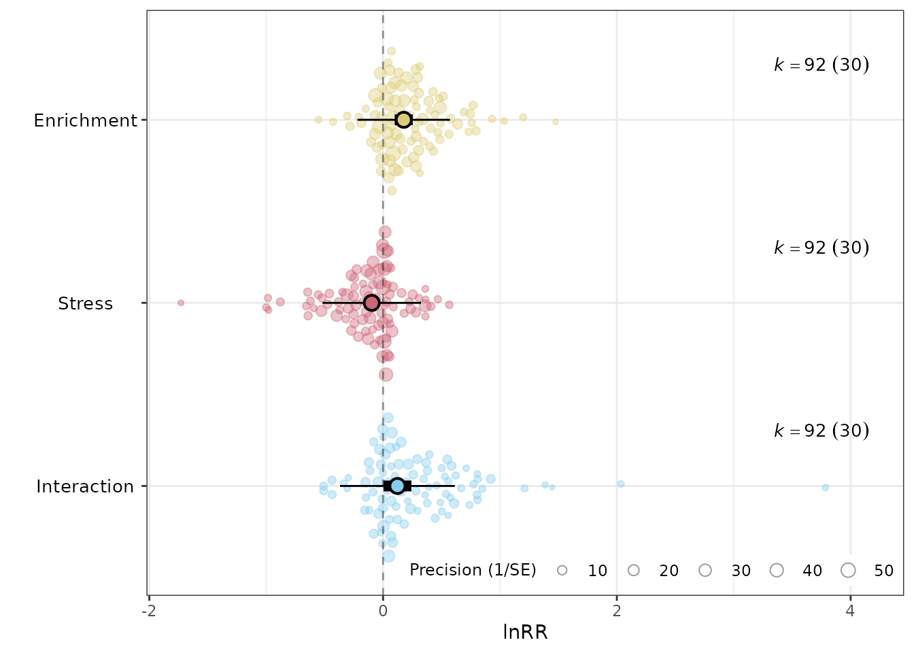

Log response ratio example: Macartney et al. 2022
Source:vignettes/articles/Macartney_2022.Rmd
Macartney_2022.RmdIntroduction
Macartney, Lagisz, and Nakagawa (2022) conducted a meta-analysis examining how environmental enrichment and stress affect learning and memory in rodents. They compiled data from 30 studies that used a fully crossed 2×2 factorial design and computed log response ratios (lnRR). Here I focus on three of them: the main effect of enrichment, the main effect of stress, and their interaction. These effect sizes were then analysed using multi-level meta-analysis models.
This vignette shows how to reproduce those three core results using
the minter package. Instead of writing custom functions (as
in the original analysis), minter provides
lnRR_main() and lnRR_inter() which compute the
effect sizes and their sampling variances directly from raw group means,
standard deviations, and sample sizes.
Loading packages
library(minter)
library(orchaRd)
#>
#> Loading the 'orchaRd' package (version 2.2.1). For an
#> introduction and vignette to the package please see: https://daniel1noble.github.io/orchaRd/
library(metafor)
#> Loading required package: Matrix
#> Loading required package: metadat
#> Loading required package: numDeriv
#>
#> Loading the 'metafor' package (version 5.0-1). For an
#> introduction to the package please type: help(metafor)
library(ggplot2)The data
Each included study used a fully crossed 2×2 factorial design with four treatment groups:
| Group | Housing | Stress |
|---|---|---|
| CC | conventional | no |
| EC | enriched | no |
| CS | conventional | yes |
| ES | enriched | yes |
Before the analysis, I have to load the raw data and do some cleaning and processing. These steps are almost identical in the original code. First exclude the Wang study (an outlier in the original analysis) and floor the sample sizes:
df <- read.csv(
system.file("extdata", "Macartney2022_raw.csv", package = "minter"),
stringsAsFactors = TRUE
)
df <- droplevels(df[!df$First_author == "Wang", ])
df$CC_n <- floor(df$CC_n)
df$EC_n <- floor(df$EC_n)
df$CS_n <- floor(df$CS_n)
df$ES_n <- floor(df$ES_n)For each group the raw data reports a sample size, a mean, and a standard deviation. The original dataset also contains moderator variables (species, strain, sex, assay type, etc.).
The dataset contains 92 effect sizes from 30 studies. Here are the key columns:
head(df[, c("Study_ID", "First_author", "Year_published", "ES_ID",
"CC_n", "CC_mean", "CC_SD",
"EC_n", "EC_mean", "EC_SD",
"CS_n", "CS_mean", "CS_SD",
"ES_n", "ES_mean", "ES_SD",
"Response_percent", "Response_direction")])
#> Study_ID First_author Year_published ES_ID CC_n CC_mean CC_SD EC_n EC_mean
#> 1 1 Aghighi Bidgoli 2020 2 10 191.80 69.98 10 272.95
#> 2 1 Aghighi Bidgoli 2020 1 10 10.50 4.46 10 15.83
#> 3 1 Aghighi Bidgoli 2020 3 10 17.55 3.10 10 17.31
#> 4 2 Berardo 2016 4 8 3.37 0.85 8 4.05
#> 5 29 Bghagya 2017 93 12 2.51 0.48 12 2.48
#> 6 29 Bghagya 2017 92 12 4.23 0.73 12 3.92
#> EC_SD CS_n CS_mean CS_SD ES_n ES_mean ES_SD Response_percent
#> 1 104.99 10 367.24 196.31 10 232.76 81.78 no
#> 2 7.43 10 20.09 4.11 10 13.57 3.29 no
#> 3 3.10 10 10.57 2.53 10 18.06 1.96 no
#> 4 2.29 8 3.96 1.30 8 3.36 1.78 no
#> 5 0.59 12 4.42 0.97 12 2.43 0.48 no
#> 6 0.73 12 5.73 1.80 12 4.10 0.80 no
#> Response_direction
#> 1 2
#> 2 2
#> 3 1
#> 4 2
#> 5 2
#> 6 2To compute the log response ratios, twelve columns are required: for
each of the four groups, a mean, SD, and sample size. In this dataset
they are named CC_mean, CC_SD,
CC_n, and so on. However, before computing the effect
sizes, proportion data must be transformed.
Arcsine transformation for proportion data
Here we apply the arcsine square-root transformation to proportions (see equations 9 and 10 in Macartney et al. 2022):
mean_asin <- function(x) {
asin(sqrt(x / 100))
}
sd_asin <- function(x, sd) {
sqrt(((sd / 100)^2) / (4 * (x / 100) * (1 - (x / 100))))
}Note that the formulas divide by 100 (i.e., (x / 100)).
This is because these functions expect percentages as input. The authors
included a column called Response_percent, so I have to
transform all those rows.
Here I create columns called t_xx_xxxx to store the
values that are going to be used in the log response ratios. In the next
step, I apply the arcsine transformation to those values which are
percentages:
df[["t_CC_mean"]] <- df[["CC_mean"]]
df[["t_CC_SD"]] <- df[["CC_SD"]]
df[["t_EC_mean"]] <- df[["EC_mean"]]
df[["t_EC_SD"]] <- df[["EC_SD"]]
df[["t_CS_mean"]] <- df[["CS_mean"]]
df[["t_CS_SD"]] <- df[["CS_SD"]]
df[["t_ES_mean"]] <- df[["ES_mean"]]
df[["t_ES_SD"]] <- df[["ES_SD"]]Here I use the Response_percent column to create a
vector that filters rows with percentages. Then, apply transformation
only to those rows:
is_perc <- df[["Response_percent"]] == "yes"
df[is_perc, "t_CC_mean"] <- mean_asin(df[is_perc, "CC_mean"])
df[is_perc, "t_CC_SD"] <- sd_asin(df[is_perc, "CC_mean"], df[is_perc, "CC_SD"])
df[is_perc, "t_EC_mean"] <- mean_asin(df[is_perc, "EC_mean"])
df[is_perc, "t_EC_SD"] <- sd_asin(df[is_perc, "EC_mean"], df[is_perc, "EC_SD"])
df[is_perc, "t_CS_mean"] <- mean_asin(df[is_perc, "CS_mean"])
df[is_perc, "t_CS_SD"] <- sd_asin(df[is_perc, "CS_mean"], df[is_perc, "CS_SD"])
df[is_perc, "t_ES_mean"] <- mean_asin(df[is_perc, "ES_mean"])
df[is_perc, "t_ES_SD"] <- sd_asin(df[is_perc, "ES_mean"], df[is_perc, "ES_SD"])Computing effect sizes
The 2×2 design yields three quantities of interest:
- Main effect of enrichment: does enrichment improve cognition, averaged across both stress conditions?
- Main effect of stress: does stress impair cognition, averaged across both enrichment conditions?
- Interaction: does the effect of enrichment differ between stressed and unstressed animals?
Main effects
The lnRR_main() computes the log response ratio for a
main effect. In lnRR_main(), the main effect is computed
for “factor A” (see documentation).
To compute the log response ratio of enrichment, factor A is enrichment (EC) and factor B is stress (CS). Factor AB is always the interaction:
df <- lnRR_main(
data = df,
col_names = c("yi_E", "vi_E"),
Ctrl_mean = "t_CC_mean", Ctrl_sd = "t_CC_SD", Ctrl_n = "CC_n",
A_mean = "t_EC_mean", A_sd = "t_EC_SD", A_n = "EC_n",
B_mean = "t_CS_mean", B_sd = "t_CS_SD", B_n = "CS_n",
AB_mean = "t_ES_mean", AB_sd = "t_ES_SD", AB_n = "ES_n"
)To obtain the stress main effect, I swap the A and B arguments:
df <- lnRR_main(
data = df,
col_names = c("yi_S", "vi_S"),
Ctrl_mean = "t_CC_mean", Ctrl_sd = "t_CC_SD", Ctrl_n = "CC_n",
A_mean = "t_CS_mean", A_sd = "t_CS_SD", A_n = "CS_n",
B_mean = "t_EC_mean", B_sd = "t_EC_SD", B_n = "EC_n",
AB_mean = "t_ES_mean", AB_sd = "t_ES_SD", AB_n = "ES_n"
)The new columns yi_E / vi_E and
yi_S / vi_S contain the effect sizes and their
sampling variances:
head(df[, c("ES_ID", "yi_E", "vi_E", "yi_S", "vi_S")])
#> ES_ID yi_E vi_E yi_S vi_S
#> 1 2 -0.051586120 0.017256813 0.24514084 0.017256813
#> 2 1 0.009085456 0.012533910 0.24740076 0.012533910
#> 3 3 0.260955084 0.003308576 -0.23230949 0.003308576
#> 4 4 0.009750543 0.024117139 -0.01272231 0.024117139
#> 5 93 -0.305136316 0.003757263 0.27274482 0.003757263
#> 6 92 -0.205419448 0.004192008 0.17420443 0.004192008Interaction
The function lnRR_inter() computes the log response
ratio of the interaction. Here the order of factors A and B is
irrelevant:
df <- lnRR_inter(
data = df,
col_names = c("yi_ES", "vi_ES"),
Ctrl_mean = "t_CC_mean", Ctrl_sd = "t_CC_SD", Ctrl_n = "CC_n",
A_mean = "t_EC_mean", A_sd = "t_EC_SD", A_n = "EC_n",
B_mean = "t_CS_mean", B_sd = "t_CS_SD", B_n = "CS_n",
AB_mean = "t_ES_mean", AB_sd = "t_ES_SD", AB_n = "ES_n"
)
head(df[, c("ES_ID", "yi_ES", "vi_ES")])
#> ES_ID yi_ES vi_ES
#> 1 2 -0.8088432 0.06902725
#> 2 1 -0.8028923 0.05013564
#> 3 3 0.5494493 0.01323430
#> 4 4 -0.3481072 0.09646856
#> 5 93 -0.5862242 0.01502905
#> 6 92 -0.2586182 0.01676803Aligning effect size directions
Depending on the response variable, a positive effect size can
indicate better or worse performance. The data from Macartney et
al. 2022 has the Response_direction column: a value of 2
means “lower is better”. So I have to multiply those effect sizes by −1
so that positive yi consistently means better performance
across all studies.
Variance–covariance matrix
Multiple effect sizes can come from the same study, so their sampling
errors are correlated. We account for this by constructing a
variance–covariance matrix with metafor::vcalc(). The
rho = 0.5 argument specifies the assumed correlation among
effect sizes within the same study, and cluster = Study_ID
groups them accordingly. See Nakagawa
et al. 2023 for a gentle explanation.
Meta-analysis models
To estimate the average log response ratios, I fit multilevel
meta-analytic models using metafor::rma.mv(), identicall to
those used in the original paper:
Main effect of enrichment
mod_E <- rma.mv(
yi = yi_E_flip, V = VCV_E,
random = list(~1|Study_ID, ~1|ES_ID, ~1|Strain),
test = "t", data = df
)
summary(mod_E)
#>
#> Multivariate Meta-Analysis Model (k = 92; method: REML)
#>
#> logLik Deviance AIC BIC AICc
#> -9.5930 19.1860 27.1860 37.2294 27.6511
#>
#> Variance Components:
#>
#> estim sqrt nlvls fixed factor
#> sigma^2.1 0.0039 0.0627 30 no Study_ID
#> sigma^2.2 0.0330 0.1815 92 no ES_ID
#> sigma^2.3 0.0013 0.0361 6 no Strain
#>
#> Test for Heterogeneity:
#> Q(df = 91) = 804.4317, p-val < .0001
#>
#> Model Results:
#>
#> estimate se tval df pval ci.lb ci.ub
#> 0.1771 0.0389 4.5482 91 <.0001 0.0998 0.2545 ***
#>
#> ---
#> Signif. codes: 0 '***' 0.001 '**' 0.01 '*' 0.05 '.' 0.1 ' ' 1Main effect of stress
mod_S <- rma.mv(
yi = yi_S_flip, V = VCV_S,
random = list(~1|Study_ID, ~1|ES_ID, ~1|Strain),
test = "t", data = df
)
summary(mod_S)
#>
#> Multivariate Meta-Analysis Model (k = 92; method: REML)
#>
#> logLik Deviance AIC BIC AICc
#> -15.1332 30.2665 38.2665 48.3099 38.7316
#>
#> Variance Components:
#>
#> estim sqrt nlvls fixed factor
#> sigma^2.1 0.0049 0.0700 30 no Study_ID
#> sigma^2.2 0.0391 0.1976 92 no ES_ID
#> sigma^2.3 0.0000 0.0000 6 no Strain
#>
#> Test for Heterogeneity:
#> Q(df = 91) = 895.3391, p-val < .0001
#>
#> Model Results:
#>
#> estimate se tval df pval ci.lb ci.ub
#> -0.0967 0.0311 -3.1084 91 0.0025 -0.1585 -0.0349 **
#>
#> ---
#> Signif. codes: 0 '***' 0.001 '**' 0.01 '*' 0.05 '.' 0.1 ' ' 1Interaction
mod_ES <- rma.mv(
yi = yi_ES_flip, V = VCV_ES,
random = list(~1|Study_ID, ~1|ES_ID, ~1|Strain),
test = "t", data = df
)
summary(mod_ES)
#>
#> Multivariate Meta-Analysis Model (k = 92; method: REML)
#>
#> logLik Deviance AIC BIC AICc
#> -41.0014 82.0027 90.0027 100.0462 90.4678
#>
#> Variance Components:
#>
#> estim sqrt nlvls fixed factor
#> sigma^2.1 0.0316 0.1777 30 no Study_ID
#> sigma^2.2 0.0230 0.1515 92 no ES_ID
#> sigma^2.3 0.0030 0.0550 6 no Strain
#>
#> Test for Heterogeneity:
#> Q(df = 91) = 307.4079, p-val < .0001
#>
#> Model Results:
#>
#> estimate se tval df pval ci.lb ci.ub
#> 0.1230 0.0599 2.0548 91 0.0428 0.0041 0.2419 *
#>
#> ---
#> Signif. codes: 0 '***' 0.001 '**' 0.01 '*' 0.05 '.' 0.1 ' ' 1Orchard plots
Orchard plots are a relatively new way of visualizing results from meta-analyses. They display the meta-analytic mean (point), 95% confidence interval (thick line), 95% prediction interval (thin line), and individual effect sizes scaled by their precision. For ecology data, where individual studies commonly produce various effect sizes, orchard plots are far better than classic forest plots. You can read more in the original paper by Nakagawa et al. 2021.
Combined plot
To compare all three effects on a single figure, I have to extract
the estimates from each model with orchaRd::mod_results(),
merge them with submerge(), and call
orchard_plot() once. This is not the prettiest way, but it
works:
mod_list <- list(mod_E, mod_S, mod_ES)
mod_res <- lapply(mod_list, function(x) mod_results(x, group = "Study_ID"))
merged <- submerge(mod_res[[3]], mod_res[[2]], mod_res[[1]], mix = TRUE)
merged$mod_table$name <- factor(merged$mod_table$name,
levels = c("Intrcpt1", "Intrcpt2", "Intrcpt3"),
labels = rev(c("Enrichment", "Stress", "Interaction")))
merged$data$moderator <- factor(merged$data$moderator,
levels = c("Intrcpt1", "Intrcpt2", "Intrcpt3"),
labels = rev(c("Enrichment", "Stress", "Interaction")))
orchard_plot(
merged,
xlab = "lnRR",
angle = 0,
group = "Study_ID",
alpha = 0.4,
trunk.size = 0.8,
branch.size = 2.8
)
This is the same as Figure 3A in Macartney et al. 2022.
References
Macartney, E. L., Lagisz, M., & Nakagawa, S. (2022). The relative benefits of environmental enrichment on learning and memory are greater when stressed: a meta-analysis of interactions in rodents. Neuroscience & Biobehavioral Reviews, 137, 104636. https://doi.org/10.1016/j.neubiorev.2022.104554
Nakagawa, S., Yang, Y., Macartney, E. L., Spake, R., & Lagisz, M. (2023). Quantitative evidence synthesis: a practical guide on meta-analysis, meta-regression, and publication bias tests for environmental sciences. Environmental Evidence, 12(1), 8. https://doi.org/10.1186/s13750-023-00301-6
Nakagawa, S., Lagisz, M., O’Dea, R. E., Rutkowska, J., Yang, Y., Noble, D. W., & Senior, A. M. (2021). The orchard plot: cultivating a forest plot for use in ecology, evolution, and beyond. Research Synthesis Methods, 12(1), 4-12. https://doi.org/10.1002/jrsm.1424